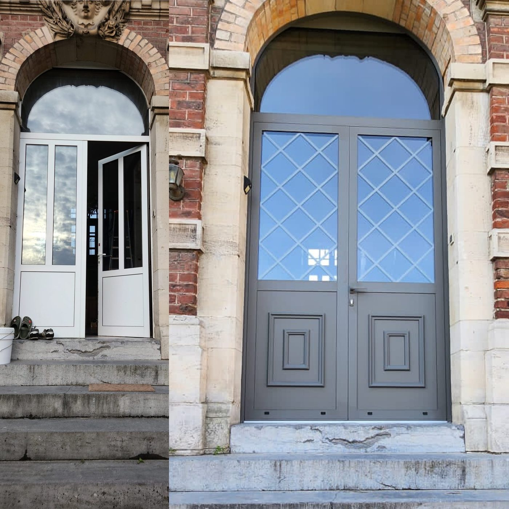
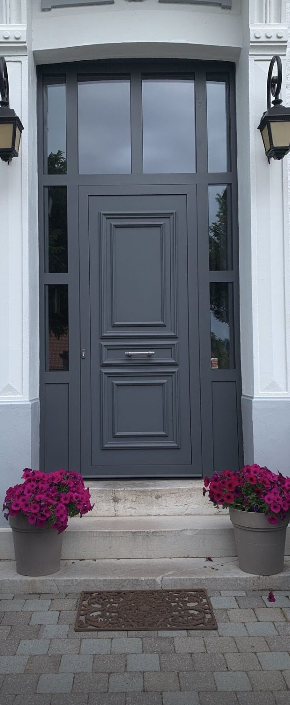
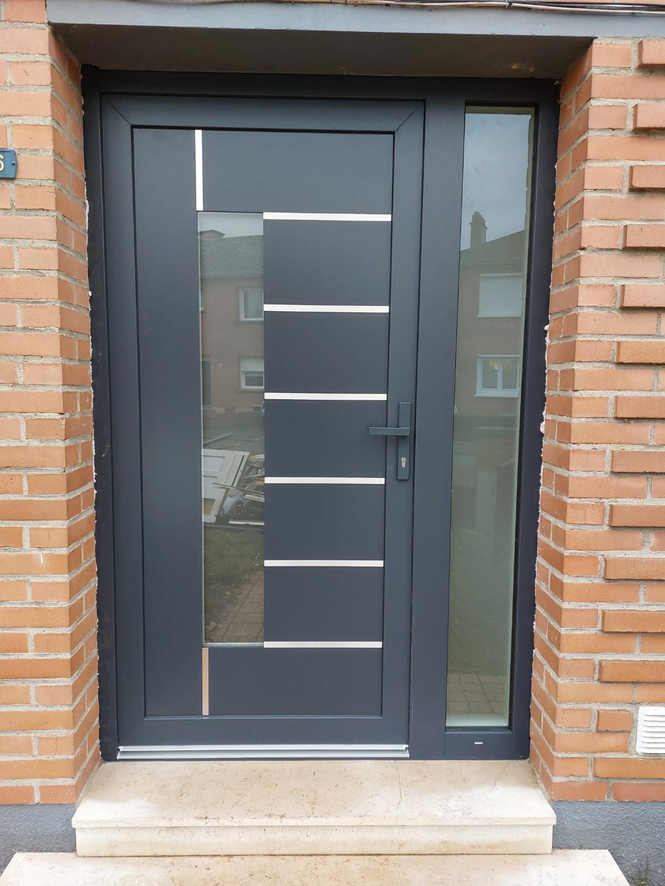
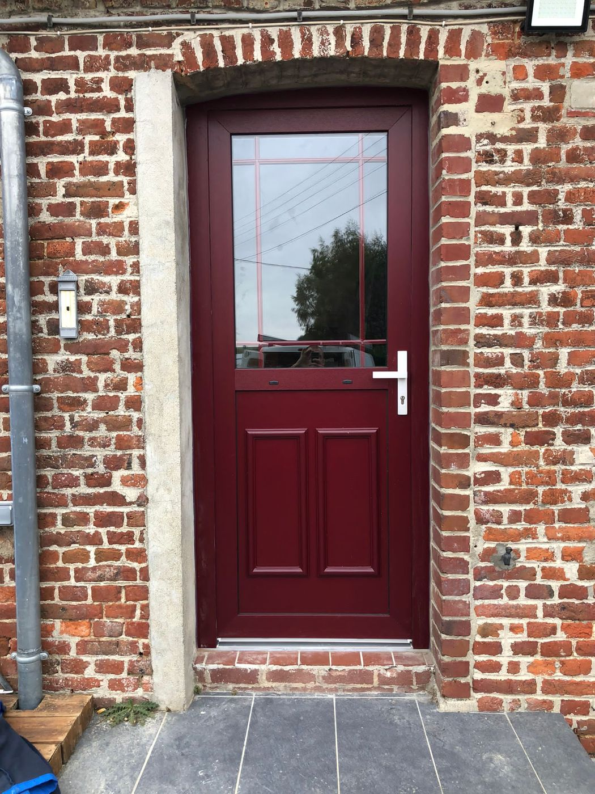
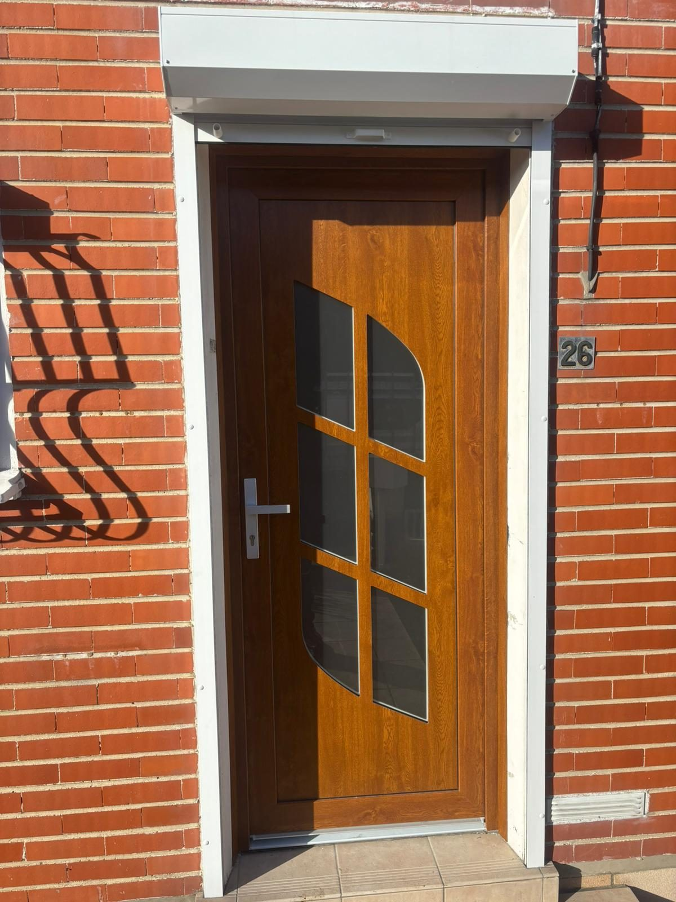
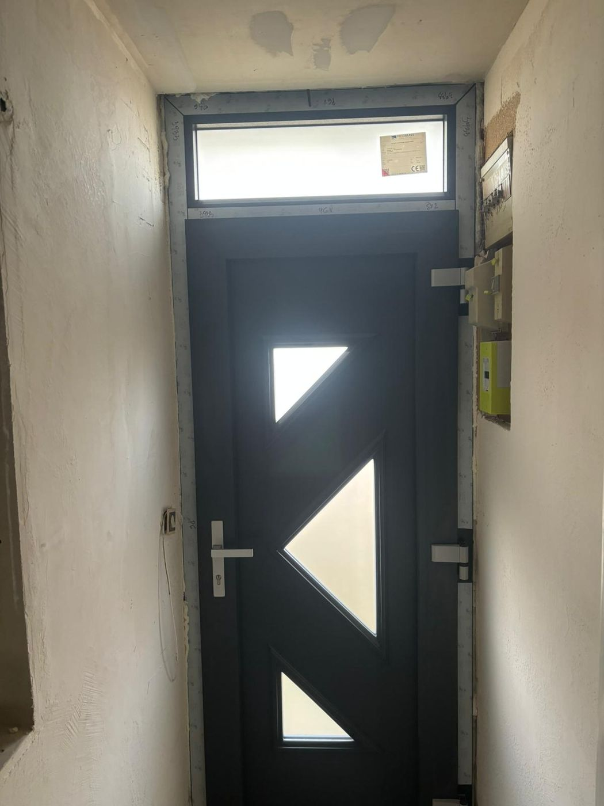
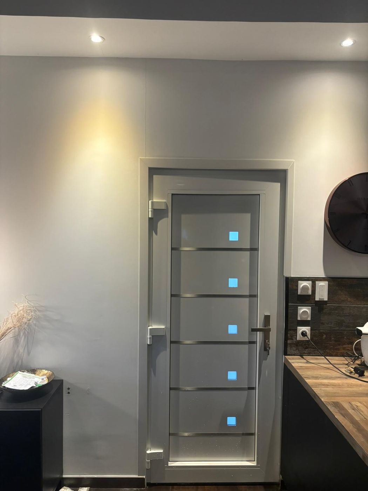
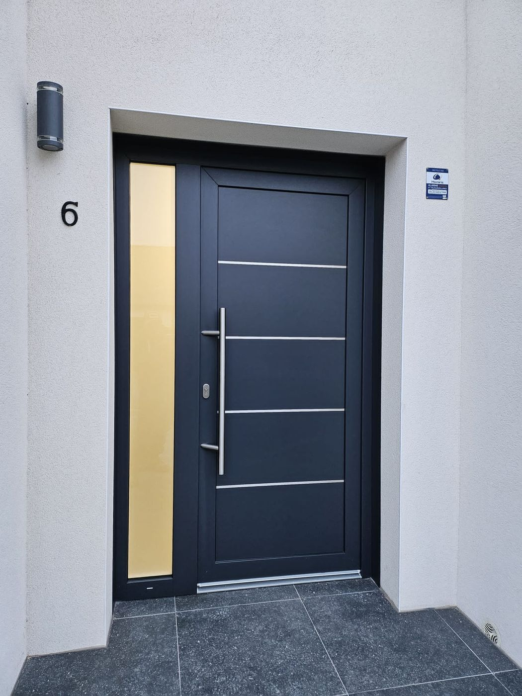
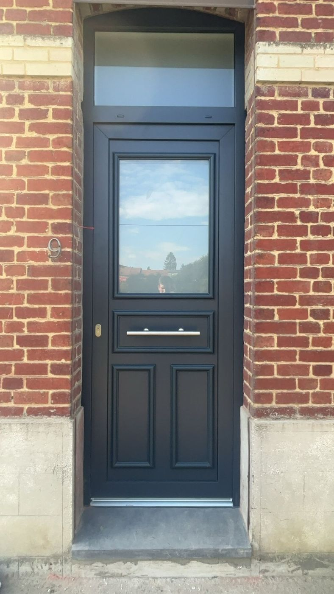

- Chantier — Portes d'entrée
Quelques-unes des portes d'entrée posées par nos équipes dans la région, du classique au contemporain, du vitrage décoratif au panneau plein.
Chaque porte est fabriquée sur mesure : si un modèle vous plaît, il existe dans bien d'autres teintes, vitrages et finitions. Le plus simple est d'en parler ensemble.









